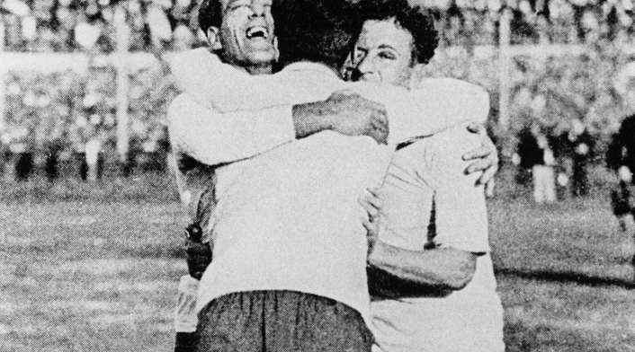
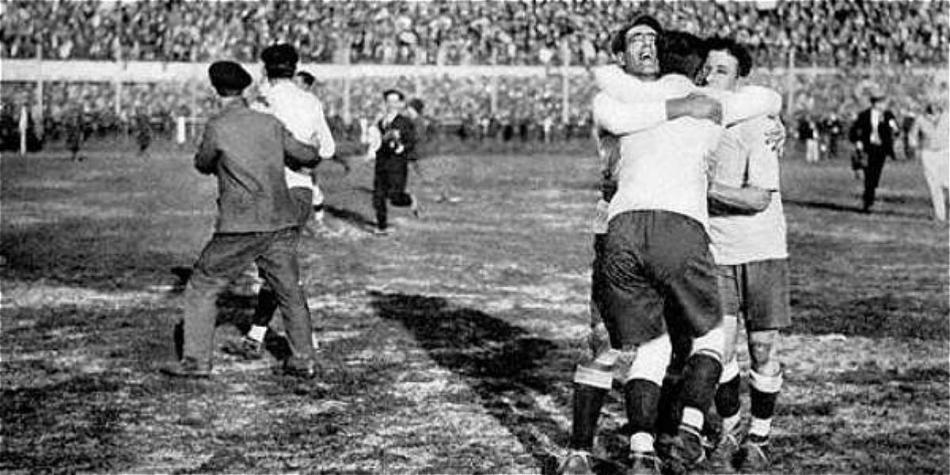

La Copa Mundial de la FIFA Uruguay 1930 representa el hito inaugural en la rica historia de la competición más prestigiosa del fútbol a nivel mundial. Esta primera edición del Campeonato Mundial de Fútbol, organizado por la FIFA, marcó el comienzo de una tradición que ha perdurado durante décadas y ha capturado la imaginación de millones de aficionados en todo el mundo.

Celebrada en Uruguay entre el 13 y el 30 de julio de 1930, esta primera Copa Mundial fue un evento revolucionario en el mundo del deporte. Uruguay fue elegido como anfitrión después de ganar la medalla de oro en los Juegos Olímpicos de 1924 y 1928, y su pasión por el fútbol lo convirtió en el escenario perfecto para este torneo histórico.
La competición contó con la participación de trece equipos, siete de Europa y seis de América, que compitieron en una serie de partidos emocionantes que cautivaron a la audiencia global. Los estadios uruguayos, incluido el Estadio Centenario en Montevideo, fueron testigos de momentos épicos y batallas memorables mientras los equipos luchaban por la gloria futbolística.
La final del torneo enfrentó a Uruguay contra Argentina en un emocionante enfrentamiento que capturó la atención del mundo entero. Ante una multitud apasionada en el Estadio Centenario, Uruguay emergió victorioso con un marcador de 4-2, reclamando así el título de campeón del mundo en su propia casa y asegurando un lugar en la historia del fútbol.
El equipo uruguayo, liderado por figuras legendarias como José Nasazzi y Héctor Castro, demostró su habilidad y determinación en el campo, dejando una impresión indeleble en la memoria de los aficionados al fútbol. Su victoria no solo consagró a Uruguay como el primer campeón mundial, sino que también estableció un legado de excelencia futbolística que ha perdurado a lo largo de los años.
La Copa Mundial de la FIFA Uruguay 1930 no solo fue un evento deportivo de gran magnitud, sino también un momento crucial en la historia del fútbol. Marcó el comienzo de una tradición que ha crecido y evolucionado con el tiempo, convirtiéndose en el espectáculo global que conocemos hoy en día. Esta primera edición sentó las bases para el éxito y la emoción que han definido la Copa Mundial en las décadas siguientes, asegurando su lugar como el evento deportivo más grande del mundo.